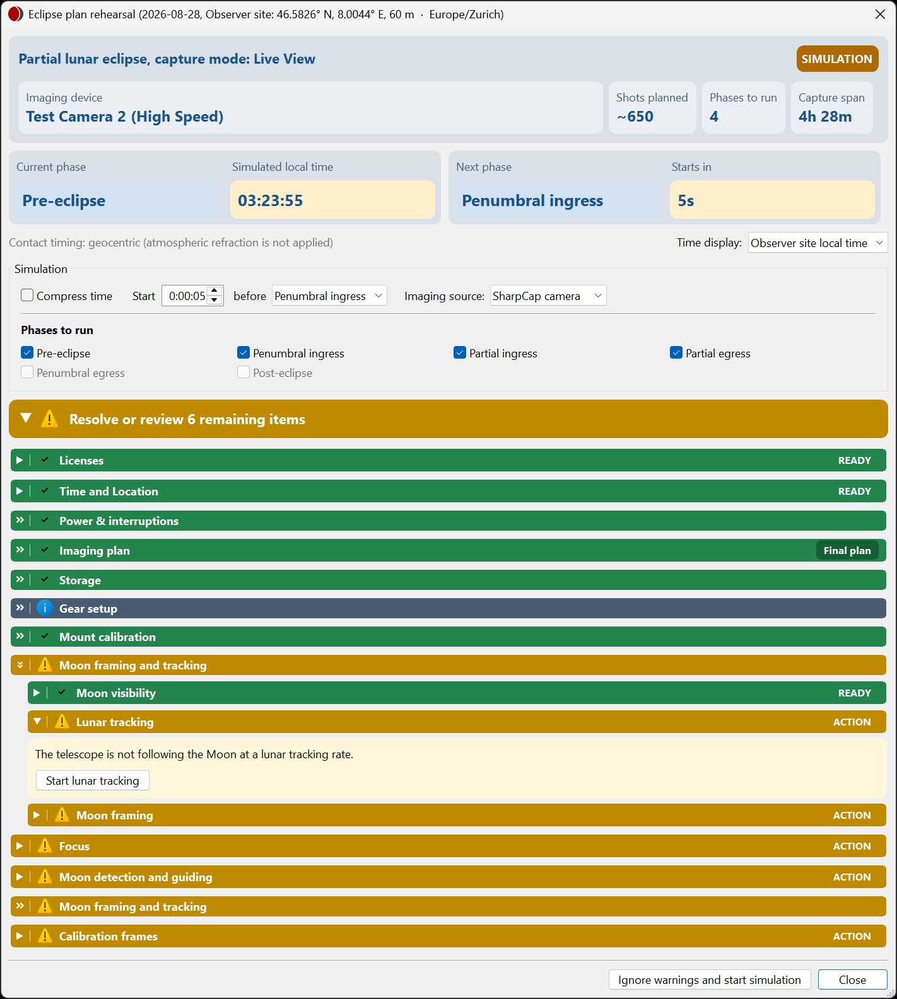
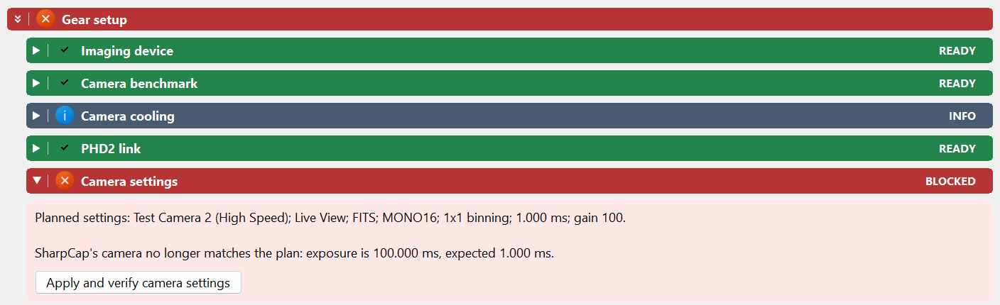
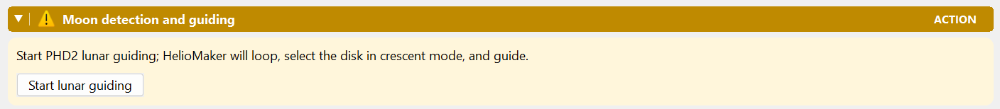
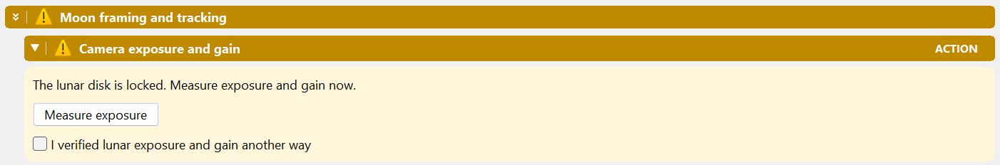

Preflight checklist
Verify the current plan, clock and equipment before starting the sequence.
Choose the right entry point
Eclipse plan rehearsal... opens a simulated event. Start eclipse imaging opens preflight for the real event clock. Inspect the mode, event, site, timings and saved plan version at the top before taking any equipment actions.

Work through the checklist
| Group / check | What to do |
|---|---|
| Time and Location | Check observer site, time zone and clock. Use Clock sync... if needed; confirm which time display is selected. A warning reads "Windows switches daylight-saving time during this eclipse window, so computed times can shift by up to an hour around the switch. Set the Windows time zone to UTC before the run." |
| Imaging plan | Check the selected event, exposure plan and draft/final choice. A live run requires the saved final plan. |
| Gear setup | Verify camera identity, SharpCap, the PHD2 camera arrangement and current benchmark qualification. |
| Camera settings | Use Apply and verify camera settings and wait for read-back of the camera, mode, format, data format, binning, capture area, exposure and gain. When it succeeds, the item lists what it changed. |
| Mount calibration | Review focal length/image scale, polar alignment and PHD2 calibration when guiding. |
| Moon framing and tracking | Inspect visibility and framing. Use Start lunar tracking, then Start lunar guiding as appropriate, and wait for stable detection/guiding. |
| Focus / Focus & auto-refocus | Inspect the image and explicitly confirm the baseline. When refocusing is planned, use Recheck focuser, Run autofocus/Cancel and the run-only refocus toggle. Confirm separately after inspecting a successful scan; an ignored warning does not authorize scheduled refocusing. See Focusing for SharpCap method, full-disk focusing ROI and confirmation lifetime. |
| Camera exposure and gain | Use Measure exposure after the lunar disk is locked, or explicitly confirm your independent exposure verification. |
| Storage / Power & interruptions | Check capture folder, free disk space, power, sleep prevention and Windows Update/restart settings. The capture folder shown is the one the run writes to. |
| Licenses / Calibration frames / Meridian crossing | Verify licenses for the event, your flats/darks plan and the mount procedure for any meridian crossing. |


Storage before Start
Disk space compares the free space in the capture folder with an estimate for the selected phases, from the capture area, data format and file format. It fails when the estimate does not fit, and warns when space is tight or when the estimate or the free space cannot be determined. Post-eclipse capture continues until you stop it, so its use per hour is added as a note: "Post-eclipse capture continues until Stop and may use about 2.40 GB per hour in addition to this estimate." With ample space for the rest of the plan, the note is information only.
Time to guide between sets
When guiding pauses while each imaging set is captured, Moon detection and guiding warns about phases whose sets leave less than the minimum guiding time between them. It names those phases and the interval each needs, for example: "With the shared camera, guiding pauses while each imaging set is captured. Partial ingress (needs sets every 106 s) leaves too little time to guide between sets. Lengthen those sets, lower the exposure ceiling, or use a separate guide camera." With a physical guiding camera and Pause guiding during exposures ticked, the sentence begins "Guiding pauses while each imaging set is captured." and ends "or let guiding continue during exposures." Lengthen set interval and Resume guiding early prevent the warning; see the Guiding time policy.
Verify exposure on the locked lunar image
Measure exposure needs stable lunar detection/guiding and a coherent camera exposure/gain reading. It checks the brightest lunar detail and clipping. Follow a Too bright or Too dim result, update the relevant settings, apply them and measure again. If settings change, an earlier verification can become stale.
Measure exposure appears only when the imaging camera also guides (a shared camera) with real SharpCap frames. With a separate guide camera or simulated guide frames, check the lunar disk's brightness in SharpCap, then tick I verified lunar exposure and gain another way.
I verified lunar exposure and gain another way is an explicit operator confirmation. Use it only after independently checking the actual image, for example when running without guiding.

Resolve the verdict and start
Read each expanded item and complete its action or confirmation. Some checks require your judgment rather than an automatic measurement. Review amber warnings even if the start control allows proceeding.
Preflight, Start and a rehearsal are refused while another eclipse run owns the imaging system, or while a capture sequence, an SHG scan or a PHD2 calibration uses the same camera, mount and guiding. The message names what to stop or close first. After a run whose last capture SharpCap never confirmed, the camera, mount and guiding stay reserved until SharpCap confirms or is closed; see the run console.
Once the intended final plan and checklist are ready, start from preflight. Continue monitoring in the run console.